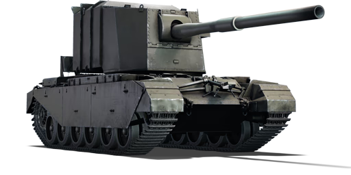
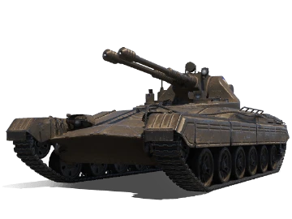
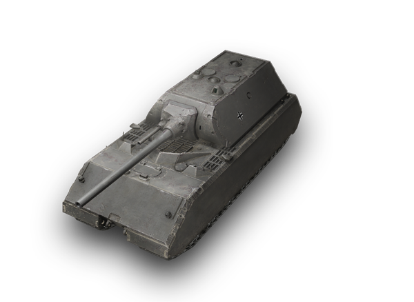

„Lodówka” z największym działem świata
FV4005 Stage II to brytyjski eksperymentalny niszczyciel czołgów zbudowany na podwoziu Centuriona. Jego cechą charakterystyczną jest ogromna, obrotowa wieża (często nazywana lodówką) skrywająca działo kalibru 183 mm – największą armatę przeciwpancerną, jaką kiedykolwiek zamontowano na czołgu. Projekt miał być odpowiedzią na radzieckie ciężkie czołgi serii IS, jednak ze względu na rozwój pocisków kierowanych, nigdy nie wszedł do masowej produkcji.
Czytaj więcej...
"Tasak" Vz. 71 Tesák Czechosłowacki łowca
Vz. 71 Tesák to projekt czechosłowackiego niszczyciela czołgów opracowany w okresie zimnej wojny. Pojazd miał łączyć niską sylwetkę z potężnym działem dużego kalibru, zdolnym do zwalczania najcięższych pojazdów pancernych na dużym dystansie. Konstrukcja pozostała jednak jedynie na etapie koncepcji i nigdy nie trafiła do produkcji. Mimo to Tesák jest dziś ciekawym przykładem ambitnych projektów broni pancernej z tamtego okresu.
Czytaj więcej...
"Myszor" Maus Niemiecki potwór
Panzerkampfwagen VIII Maus to niemiecki superciężki czołg zaprojektowany pod koniec II wojny światowej jako niemal nie do zniszczenia maszyna pancerna. Ważący około 188 ton pojazd był najcięższym czołgiem, jaki kiedykolwiek zbudowano. Uzbrojony w potężne działo 128 mm i chroniony bardzo grubym pancerzem miał dominować na polu bitwy. Powstały jednak tylko dwa prototypy, a projekt nigdy nie wszedł do produkcji seryjnej.
Czytaj więcej...